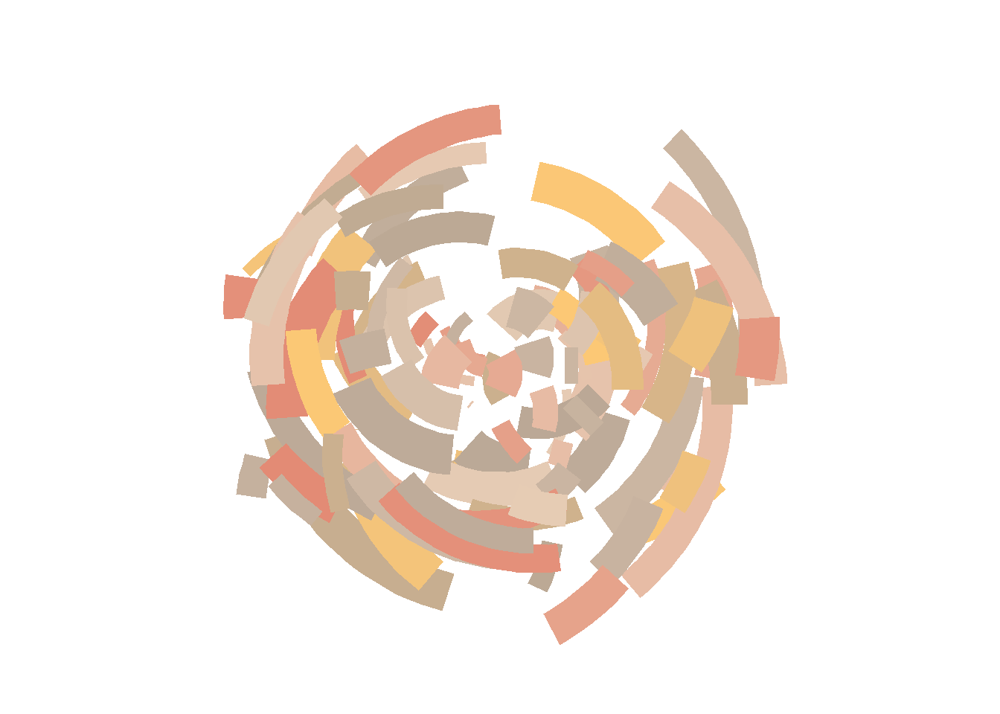
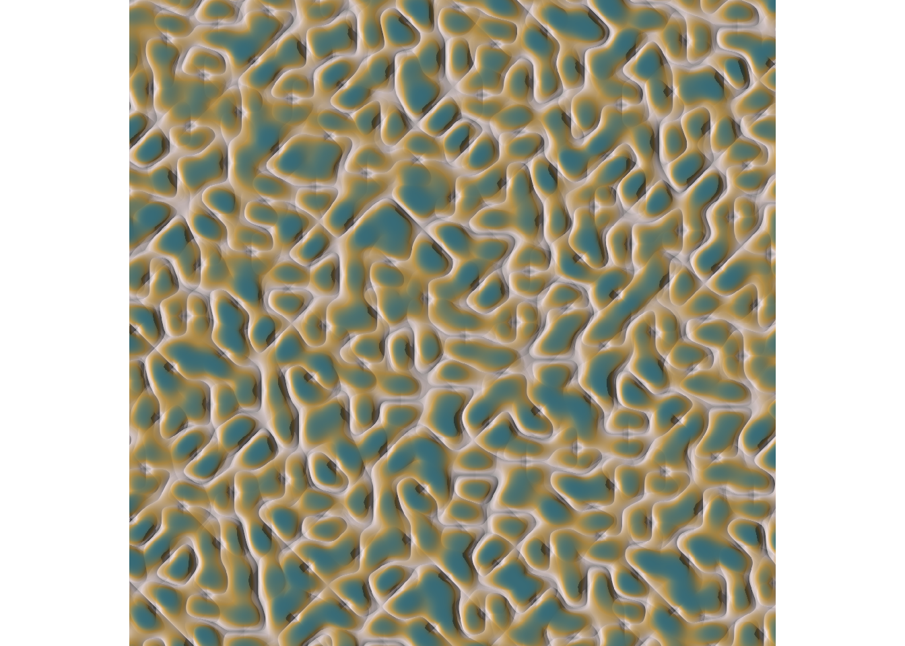
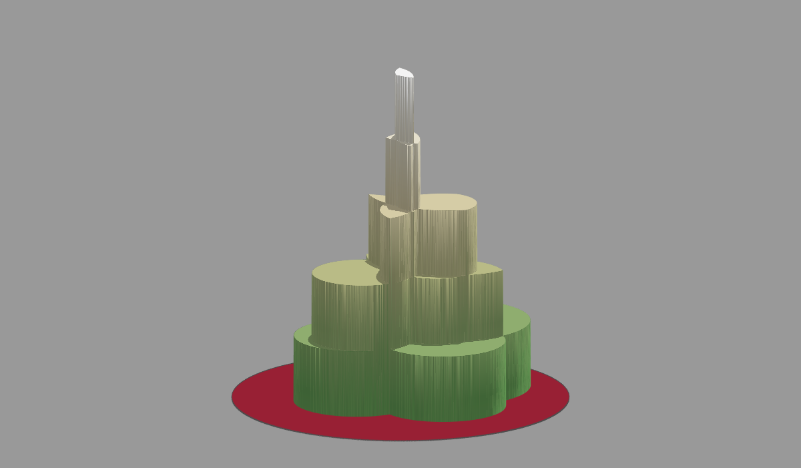
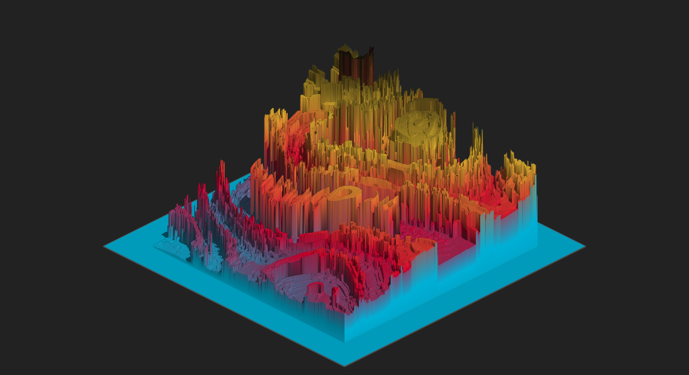

Code
#loading in required packages
library(ggplot2)
library(tibble)
library(ggthemes)Exercise: Try it yourself!
#loading in required packages
library(ggplot2)
library(tibble)
library(ggthemes)#calling on ggplot and choosing my data for each axis
ggplot(data = mpg, aes(x = displ, y = hwy, colour = drv, size = cyl))+
#creating a scatter plot of the raw data to serve as the background color and not choosing to display a legend
geom_point(show.legend = FALSE, size = 15, color = "pink")+
#getting rid of the grid in the background
theme_void()+
#creating my centerpeice, a huge sunlike violin plot!
geom_violin(color = "yellow", trim = FALSE, draw_quantiles = c(0.25, 0.5, 0.75), fill = "orange")+
scale_color_brewer()Exercises: 1.) First, I will input the function that Navarro created.
#copying in all the code to form the function polar art
library(ggplot2)
library(tibble)
polar_art <- function(seed, n, palette) {
# set the state of the random number generator
set.seed(seed)
# data frame containing random values for
# aesthetics we might want to use in the art
dat <- tibble(
x0 = runif(n),
y0 = runif(n),
x1 = x0 + runif(n, min = -.2, max = .2),
y1 = y0 + runif(n, min = -.2, max = .2),
shade = runif(n),
size = runif(n)
)
# plot segments in various colours, using
# polar coordinates and a gradient palette
dat |>
ggplot(aes(
x = x0,
y = y0,
xend = x1,
yend = y1,
colour = shade,
size = size
)) +
geom_segment(show.legend = FALSE) +
coord_polar() +
scale_y_continuous(expand = c(0, 0)) +
scale_x_continuous(expand = c(0, 0)) +
scale_colour_gradientn(colours = palette) +
scale_size(range = c(0, 10)) +
theme_void()
}
polar_art(
seed = 2,
n = 50,
palette = c("red", "black", "white")
)Now I will practice creating my own piece of art form her function:
#making one to look like the inside of a wave
polar_art(seed = 1, n = 300, palette = c("aquamarine", "cadetblue1", "azure"))#making one to look like a flower
polar_art(seed = 2, n = 1000, palette = c("yellow", "hotpink", "lightpink"))#making one to look like a mossy forrest
polar_art(seed = 2, n = 100, palette = c("forestgreen", "darkolivegreen3", "dimgray"))2.) In this exercise I will try to modify the function itself.
polar_art_2 <- function(seed, n, palette) {
# setting the state of the random number generator to 3 for a new set of nonsense
set.seed(3)
# aesthetics we might want to use in the art
#choosing my n value
n <- 200
# creating data frame containing random values, keeping runif function for uniformity
dat <- tibble(
x0 = runif(n),
y0 = runif(n),
#giving my values a wider range for more chaos to occurr
x1 = x0 + runif(n, min = -.2, max = .2),
y1 = y0 + runif(n, min = -.2, max = .2),
shade = runif(n),
size = runif(n)
)
#now plotting my new data frame using the same format
dat |>
ggplot(aes(
x = x0,
y = y0,
xend = x1,
yend = y1,
colour = shade,
size = size
)) +
geom_segment(show.legend = FALSE) +
coord_polar() +
scale_y_continuous(expand = c(0, 0)) +
scale_x_continuous(expand = c(0, 0)) +
scale_colour_gradientn(colours = palette) +
scale_size(range = c(0, 10)) +
theme_void()
}
#testing out new data frame visualization
polar_art_2(seed = 2, n = 200, palette = c("deeppink3", "cadetblue1", "lightgoldenrod1"))3.) The reason we may be naming files in this way because our functions produce art peices in very similar styles, so by naming these function similarly we can remember that their outputs are related.
Exercises: 1.) First I will be importing the function she created:
library(ggthemes)
# the original function from the first session
sample_canva <- function(seed = NULL) {
if(!is.null(seed)) set.seed(seed)
sample(ggthemes::canva_palettes, 1)[[1]]} Now I will practice calling on the function.
#seeing the same configuration but with different palletes
polar_art(seed = 5, n = 100, palette = sample_canva(seed = 1))
polar_art(seed = 5, n = 100, palette = sample_canva(seed = 2))#keeping both seeds the same
polar_art(seed = 7, n = 100, palette = sample_canva(seed = 7))2.) Now attempting to form my own function:
#constructing new function
sample_named_colours <- function(seed = NULL) {
if(!is.null(seed)) set.seed(seed)
sample(colours(distinct = TRUE), 1)[[1]]
}
#testing out pallette function with polar art
polar_art(seed = 7, n = 100, palette = sample_named_colours(seed = 7))#trying to make it more aesthetic, very one dimensional, but I like the color
polar_art(seed = 2, n = 100, palette = sample_named_colours(seed = 300))3.) I will now attempt to create a function that breaks the constraint of returning colors all from the same palette.
#importing the original function and modifing the name as well as sample theme
sample_canva_new <- function(seed = NULL) {
if(!is.null(seed)) set.seed(seed)
sample(unlist(ggthemes::canva_palettes), 1)[[1]]
}I will now test out this new function:
polar_art(seed = 4, n = 150, palette = sample_canva_new(seed = 620))
Exercises: 1.) Exploring flexibility in these pre-generated functions.
#calling in functions previously created
library(ggplot2)
library(tibble)
library(dplyr)
sample_canva <- function(seed = NULL) {
if(!is.null(seed)) set.seed(seed)
sample(ggthemes::canva_palettes, 1)[[1]]
}
sample_data <- function(seed = NULL, n = 100){
if(!is.null(seed)) set.seed(seed)
dat <- tibble(
x0 = runif(n),
y0 = runif(n),
x1 = x0 + runif(n, min = -.2, max = .2),
y1 = y0 + runif(n, min = -.2, max = .2),
shade = runif(n),
size = runif(n),
shape = factor(sample(0:22, size = n, replace = TRUE))
)
}
polar_styled_plot <- function(data = NULL, palette) {
ggplot(
data = data,
mapping = aes(
x = x0,
y = y0,
xend = x1,
yend = y1,
colour = shade,
size = size
)) +
coord_polar(clip = "off") +
scale_y_continuous(
expand = c(0, 0),
limits = c(0, 1),
oob = scales::oob_keep
) +
scale_x_continuous(
expand = c(0, 0),
limits = c(0, 1),
oob = scales::oob_keep
) +
scale_colour_gradientn(colours = palette) +
scale_size(range = c(0, 10)) +
theme_void() +
guides(
colour = guide_none(),
size = guide_none(),
fill = guide_none(),
shape = guide_none()
)
}
#changing seeds of pallette and data
dat <- sample_data(n = 100, seed = 3)
pal <- sample_canva(seed = 25)
#now exploring the amount of visual I can make via manipulation of geom point
polar_styled_plot(data = dat, palette = pal) + geom_segment()polar_styled_plot(data = dat, palette = pal) + geom_bin2d()polar_styled_plot(data = dat, palette = pal) + geom_jitter()2.) Creating my own verson of polar styled plot.
my_styled_plot <- function(data = NULL, palette) {
ggplot(
data = data, mapping = aes(
x = x0,
y = y0,
xend = x1,
yend = y1,
colour = shade,
size = size,
#adding in a shape for each point
shape = shape
)) +
#changing the tilt of the pichart to the variable y
coord_polar(clip = "off", theta = "y") +
scale_y_continuous(
expand = c(0, 0),
limits = c(0, 1),
oob = scales::oob_keep
) +
scale_x_continuous(
expand = c(0, 0),
limits = c(0, 1),
oob = scales::oob_keep
) +
scale_colour_gradientn(colours = palette) +
scale_size(range = c(0, 10)) +
theme_void() +
guides(
colour = guide_none(),
size = guide_none(),
fill = guide_none(),
shape = guide_none()
)
}
#trying out the new function with a jitter plot
my_styled_plot(data = dat, palette = pal) + geom_jitter()#trying it out with segments!
my_styled_plot(data = dat, palette = pal) + geom_segment()#loading in neccessary packages
library(rayshader)
library(tibble)
library(ambient)
library(dplyr)
library(ggplot2)
library(ggthemes)
library(tictoc)
library(dplyr)1.) From now on the exercises consist of me tweaking and playing with the script. For this exercise I will be using the circle-scape function. First I will be inserting all required code functions.
# inserting initial art function that creates circles
is_within_circle <- function(x_coord, y_coord, x_center, y_center, radius) {
(x_coord - x_center)^2 + (y_coord - y_center)^2 < radius^2
}#inserting new function to create circles at random with coordinate columns for x, y, and paint
additive_circles <- function(n = 5, pixels = 1000, seed = NULL) {
if(!is.null(seed)) set.seed(seed)
# setup canvas
art <- long_grid(
x = seq(0, 1, length.out = pixels),
y = seq(0, 1, length.out = pixels)
)
art$paint <- 0
for(i in 1:n) {
# sample a random circle
x_center <- runif(1, min = .3, max = .7)
y_center <- runif(1, min = .3, max = .7)
radius <- runif(1, min = .05, max = .25)
# add +1 to all points inside the circle
art <- art |>
mutate(
paint = paint + is_within_circle(
x, y, x_center, y_center, radius
)
)
}
# normalise paint to [0, 1] range and return
art$paint <- normalise(art$paint)
return(art)
}#plotting additive circles
circle_art <- additive_circles(seed = 99)
circle_art# A tibble: 1,000,000 3
x y paint
<dbl> <dbl> <dbl>
1 0 0 0
2 0 0.00100 0
3 0 0.00200 0
4 0 0.00300 0
5 0 0.00400 0
6 0 0.00501 0
7 0 0.00601 0
8 0 0.00701 0
9 0 0.00801 0
10 0 0.00901 0
# 999,990 more rowsggplot(circle_art, aes(x, y, fill = paint)) +
geom_raster(show.legend = FALSE) +
theme_void()#using the ambient package to switch from a tibble to a matrix
circle_array <- circle_art |>
as.array(value = paint)
circle_array[1:10, 1:10] x
y [,1] [,2] [,3] [,4] [,5] [,6] [,7] [,8] [,9] [,10]
[1,] 0 0 0 0 0 0 0 0 0 0
[2,] 0 0 0 0 0 0 0 0 0 0
[3,] 0 0 0 0 0 0 0 0 0 0
[4,] 0 0 0 0 0 0 0 0 0 0
[5,] 0 0 0 0 0 0 0 0 0 0
[6,] 0 0 0 0 0 0 0 0 0 0
[7,] 0 0 0 0 0 0 0 0 0 0
[8,] 0 0 0 0 0 0 0 0 0 0
[9,] 0 0 0 0 0 0 0 0 0 0
[10,] 0 0 0 0 0 0 0 0 0 0#plotting this matrix using image function
circle_array |>
image(axes = FALSE, asp = 1, useRaster = TRUE)#creating a new object to utlize the tools of a terrian map
circle_shadow <- ray_shade(
heightmap = circle_array,
sunaltitude = 15,
sunangle = 135,
zscale = .01,
multicore = TRUE
)
plot_map(circle_shadow, rotate = 270)I will now be using the rayshader packing to play with adding 3 dimensions to my visualizations. By increasing the suns altitube, the visualization is much bright with minimal shading.
#changing sun altitude
circle_shadow <- ray_shade(
heightmap = circle_array,
sunaltitude = 40,
sunangle = 135,
zscale = .01,
multicore = TRUE
)
plot_map(circle_shadow, rotate = 270)Now if I keep the altitude the same but increase the angle the contrast of the edges of the circles increases.
#changing sun angle
circle_shadow <- ray_shade(
heightmap = circle_array,
sunaltitude = 40,
sunangle = 160,
zscale = .01,
multicore = TRUE
)
plot_map(circle_shadow, rotate = 270)Now I will be importing the code to make a height to shadow visualization. I changed the max_darken argument in order to make the visualization brighter.
#creating visualization with shadowing using color and changing the max_darken argument
circle_scape <- circle_array |>
height_shade() |>
add_shadow(
shadowmap = circle_shadow,
max_darken = .3
)
plot_map(circle_scape, rotate = 270)2.) I will now be utilizing the script for shaded ridge art to understand its components and modify it to make a piece of my own.
#loading in my palette
sample_canva2 <- function(seed = NULL, n = 4) {
if(!is.null(seed)) set.seed(seed)
sample(ggthemes::canva_palettes, 1)[[1]] |>
(\(x) colorRampPalette(x)(n))()} #creating the function ridge art to use spatial art to produce patterns
ridge_art <- function(seed = NULL, pixels = 2000) {
if(!is.null(seed)) set.seed(seed)
long_grid(
x = seq(from = 0, to = 1, length.out = pixels),
y = seq(from = 0, to = 1, length.out = pixels)
) |>
mutate(
paint = fracture(
x = x,
y = y,
noise = gen_simplex,
fractal = ridged,
octaves = 8,
frequency = 10,
seed = seed
),
paint = normalise(paint)
) |>
as.array(value = paint)
}#testing out this function and tweaking the colors to my liking
ridge_art(5678) |>
image(
axes = FALSE,
asp = 1,
useRaster = TRUE,
col = sample_canva2(seed = 5678, n = 300)
) #now creating a function that incorporate ray shader to layer on a shadow map
shaded_ridge_art <- function(seed = NULL) {
art <- ridge_art(seed)
height_shade(
heightmap = art,
texture = sample_canva2(seed, 256)
) |>
add_shadow(
shadowmap = ray_shade(
heightmap = art,
sunaltitude = 30,
sunangle = 90,
multicore = TRUE,
zscale = .05
),
max_darken = .1
) |>
plot_map()
}#now testing out this shaded map in my colors
shaded_ridge_art(5678)
3.) I will now be exploring aspects of the shaded icescapes script to make some work of my own!
#adding in all packages not previously loaded
library(here)#generating the first set of coordinates that will be laid over noise
transform_to_curl_space <- function(x, y, frequency = 1, octaves = 10) {
curl_noise(
generator = fracture,
noise = gen_simplex,
fractal = fbm,
octaves = octaves,
frequency = frequency,
x = x,
y = y
)
}
#now constructing cells within this curl space by creating this function
define_worley_cells <- function(x, y, frequency = 3, octaves = 6) {
fracture(
noise = gen_worley,
fractal = billow,
octaves = octaves,
frequency = frequency,
value = "cell",
x = x,
y = y
) |>
rank() |>
normalise()
}#using a function to generate simplex noise between the offset of coordinates
simplex_noise <- function(x, y, frequency = .1, octaves = 10) {
fracture(
noise = gen_simplex,
fractal = ridged,
octaves = octaves,
frequency = frequency,
x = x,
y = y
) |>
normalise()
}#now combining all of this chaos into a single generative function
ice_floe <- function(seed) {
set.seed(seed)
grid <- long_grid(
x = seq(0, 1, length.out = 2000),
y = seq(0, 1, length.out = 2000)
)
coords <- transform_to_curl_space(grid$x, grid$y)
grid |>
mutate(
cells = define_worley_cells(coords$x, coords$y),
paint = simplex_noise(x + cells, y + cells),
paint = normalise(paint)
) |>
as.array(value = paint)
}#now plotting the intital image without three dimensional shading
ice_floe(170) |>
image(
axes = FALSE,
asp = 1,
useRaster = TRUE,
#chaning the colors and segments, this one looked like an avocado so i will keep it
col = sample_canva2(seed = 100, n = 324)
)#now altering the function to incorporate ray shader and make the visual three dimensional
shaded_ice_floe <- function(seed) {
art <- ice_floe(seed)
height_shade(
heightmap = art,
texture = sample_canva2(seed, 256)
) |>
add_shadow(
shadowmap = ray_shade(
heightmap = art,
sunaltitude = 30,
sunangle = 90,
multicore = TRUE,
zscale = .005
),
max_darken = .05
) |>
plot_map()
}
shaded_ice_floe(170)Now I will be trying different colors with this function!
#inserting different color codes
shaded_ice_floe(222)#this one reminds me of kinetic sand
shaded_ice_floe(97)4.) Now I will be loading and utilizing the 3d icescape script.
#using the circle height and shading map to create a 3D output, tweaking colors of background and fill
plot_3d(
hillshade = circle_scape,
heightmap = circle_array,
theta = 230,
phi = 15,
zoom = .8,
zscale = .001,
baseshape = "circle",
background = "#999999",
shadow = FALSE,
soliddepth = .3,
solidcolor = "#982034",
windowsize = 1200
)
render_snapshot(
filename = "circles_3d.png",
clear = TRUE
)
knitr::include_graphics("circles_3d.png")
#creating a 3D output of the last ice floes function
seed <- 170
ice_height <- matrix(0, 2500, 2500)
ice_height[251:2250, 251:2250] <- ice_floe(seed)
ice_scape <- height_shade(
heightmap = ice_height,
texture = sample_canva2(seed, 256)
) |>
add_shadow(
shadowmap = ray_shade(
heightmap = ice_height,
sunaltitude = 30,
sunangle = 90,
multicore = TRUE,
zscale = .005
),
max_darken = .05
)
plot_3d(
hillshade = ice_scape,
heightmap = ice_height,
theta = 45,
phi = 30,
zoom = .75,
zscale = .001,
background = "#222222",
shadow = FALSE,
soliddepth = .5,
solidcolor = "#222222",
windowsize = c(2500, 1500)
)
render_snapshot(
filename = "ice_3d.png",
clear = TRUE
)
knitr::include_graphics("ice_3d.png")
1.) Exploring the flame tree package to make my own cherry blossom tree!
library(flametree)#loading in the data frame provided
tree <- flametree_grow(
seed = 1,
time = 9,
angle = c(-15, 15, 30)
)
tree# A tibble: 3,069 12
coord_x coord_y id_tree id_time id_path id_leaf id_pathtree id_step seg_deg
<dbl> <dbl> <int> <int> <int> <lgl> <chr> <int> <dbl>
1 -0.429 0 1 1 1 FALSE 1_1 0 90
2 -0.429 0.5 1 1 1 FALSE 1_1 1 90
3 -0.429 1 1 1 1 FALSE 1_1 2 90
4 -0.429 1 1 2 2 FALSE 1_2 0 75
5 -0.429 1.45 1 2 2 FALSE 1_2 1 75
6 -0.196 1.87 1 2 2 FALSE 1_2 2 75
7 -0.429 1 1 2 3 FALSE 1_3 0 75
8 -0.429 1.3 1 2 3 FALSE 1_3 1 75
9 -0.274 1.58 1 2 3 FALSE 1_3 2 75
10 -0.196 1.87 1 3 4 FALSE 1_4 0 105
# 3,059 more rows
# 3 more variables: seg_len <dbl>, seg_col <dbl>, seg_wid <dbl># plotting the tree given as an example
tree |>
flametree_plot(
background = "#222222",
palette = c("#ffffff", "#f652a0")
)#understanding that each curved point of the tree is represented by three coordinates of data, and that we will seperate a leaf id column in order to manipulate it in the future
leaf <- tree |> filter(id_leaf == TRUE)#creating the base of my visualization
base <- ggplot() +
scale_size_identity() +
theme_void() +
coord_equal()#creating the leaves of the tree, altering the size, border, and color to my liking
leaves <- geom_point(
mapping = aes(coord_x, coord_y),
data = leaf,
size = 1,
stroke = .5,
colour = "orchid1"
)#creating the trunk
library(ggforce)
trunk <- geom_bezier(
mapping = aes(coord_x, coord_y, group = id_pathtree, size = seg_wid),
data = tree,
lineend = "round",
colour = "saddlebrown",
show.legend = FALSE
)#putting it all together to make my cherry blossom tree!
base + trunk + leaves2.) I will now explore glow properties to add it to my tree.
library(ggfx)
#changed to inner glow, changed the leaf glow to pink
#added golden glow to the trunk
base +
with_outer_glow(trunk, colour = "gold") +
with_inner_glow(leaves, colour = "pink")3.) I will now explore the dithering effect on the previous art made during the getting started segment.
#creating the radial art to then dither
set.seed(1)
polar <- tibble(
arc_start = runif(200),
arc_end = arc_start + runif(200, min = -.2, max = .2),
radius = runif(200),
shade = runif(200),
size = runif(200)
)
base <- ggplot(
data = polar,
mapping = aes(
x = arc_start,
y = radius,
xend = arc_end,
yend = radius,
colour = shade,
size = size
)
) +
coord_polar(clip = "off") +
scale_y_continuous(limits = c(0, 1), oob = scales::oob_keep) +
scale_x_continuous(limits = c(0, 1), oob = scales::oob_keep) +
scale_colour_viridis_c(option = "magma") +
guides(colour = guide_none(), size = guide_none()) +
scale_size(range = c(0, 10)) +
theme_void() +
theme(panel.background = element_rect(fill = "#aaaaaa"))#now trying out the dithering effect, and manipulating number of colors
base + geom_segment()base + with_dither(geom_segment(), max_colours = 4)#manipulating the number of colors and apply dithering with the other effects
base + with_halftone_dither(geom_segment(), max_colours = 4)with_halftone_dither(base + geom_segment(), max_colours = 5)4.) I will now be exploring the masking effect which only reveals a layer of the plot when it overlaps with another. I will be making a cheesy sticker.
# first i will import the textured plot that will be used as the background
texture <- geom_raster(
mapping = aes(x, y, fill = paint),
data = long_grid(
x = seq(from = -1, to = 1, length.out = 1000),
y = seq(from = -1, to = 1, length.out = 1000)
) |>
mutate(
lf_noise = gen_simplex(x, y, frequency = 2, seed = 1234),
mf_noise = gen_simplex(x, y, frequency = 20, seed = 1234),
hf_noise = gen_simplex(x, y, frequency = 99, seed = 1234),
paint = lf_noise + mf_noise + hf_noise
)
)#next import the code/shape that will be overlayed the texture
hex <- tibble(x = sin((0:6)/6 * 2 * pi), y = cos((0:6)/6 * 2 * pi))
mask <- geom_polygon(aes(x, y), hex, fill = "white")#now both texture and the shapes will be on top of this background called base
#the original code was not providing a colored background so i edited it for a blue background
base <- ggplot() +
theme(
panel.background = element_rect(fill = "lightcyan1"),
axis.line = element_blank(),
axis.text = element_blank(),
axis.title = element_blank(),
axis.ticks = element_blank(),
panel.grid = element_blank(),
panel.border = element_blank()
) +
coord_equal() +
scale_x_continuous(expand = c(0, 0)) +
scale_y_continuous(expand = c(0, 0)) +
scale_fill_gradientn(
colours = c("paleturquoise1", "lightseagreen"),
guide = guide_none()
)
base#now looking at the base with each individual layer
base + texture base + mask#now putting it all together
base +
as_reference(mask, id = "mask") +
with_mask(texture, "mask")
#creating a border
border <- geom_path(aes(x, y), hex, colour = "white", size = 5)
#adding my text
text <- geom_text(
mapping = aes(x, y, label = text),
dat = tibble(x = 0, y = 0, text = "KEEP CALM
AND CODE ON"),
size = 10,
colour = "white",
fontface = "bold"
) #putting the border and text on top
base + texture + text + borderbase +
as_group(texture, text, border, id = "content") +
as_reference(mask, id = "mask") +
with_mask("content", "mask")5.) In this exercise I will be practicing displacement, where the color of pixels determine the placement of them in the visualization.
#importing a polygon layer of transparent triangles, changing the color of the fill
polygon_layer <- function(x, y, fill = "red1", alpha = .5) {
geom_polygon(aes(x, y), fill = fill, alpha = alpha)
}
poly1 <- polygon_layer(x = c(1, 0, 0), y = c(0, 0, 1))
poly2 <- polygon_layer(x = c(0, 1, 1), y = c(0, 0, 1))
poly3 <- polygon_layer(x = c(.3, 1, 1), y = c(0, 0, .7))
poly4 <- polygon_layer(x = c(0, 0, .7), y = c(.3, 1, 1))#adding in a base plot for the polygons to be layered on
base <- ggplot() +
coord_equal(xlim = c(0, 1), ylim = c(0, 1)) +
theme_void() +
theme(panel.background = element_rect(fill = "darkorange2"))
#layering them
base + poly1 + poly2 + poly3 + poly4#importing a layer that will be used as the image that will be displaced, and changing the text to something "edgy"
text <- geom_text(
mapping = aes(0.5, 0.5, label = "ME?"),
size = 60,
colour = "black",
fontface = "bold"
)base + poly1 + poly2 + poly3 + poly4 + textbase +
#converting into a single layer
as_group(poly1, poly2, poly3, poly4, id = "polygons", include = TRUE) +
#making this group the filter
as_reference("polygons", id = "displacement_map") +
#displacing
with_displacement(
text,
x_map = ch_alpha("displacement_map"),
y_map = ch_alpha("displacement_map"),
#improving the amount of pixels shifting
x_scale = 300,
y_scale = -300
)6.) Now I will be exploring the blend technique in art in order the modify my previous flame tree.
#importing a solid triangle
triangle <- polygon_layer(
x = c(-4, 2, 2),
y = c(0, 0, 6),
fill = "white",
alpha = 1
)#creating a blend of pixels with the triangle and flametree
base <- ggplot() +
theme_void() +
coord_equal(xlim = c(-3, 1), ylim = c(1, 5)) +
scale_x_continuous(expand = c(0, 0)) +
scale_y_continuous(expand = c(0, 0)) +
scale_size_identity(guide = guide_none())
base +
as_group(trunk, leaves, id = "tree") +
with_blend(triangle, "tree", blend_type = "xor")I will attempt to recreate one of my favorite pieces to resemble the shoreline.
# first i will import the textured plot that will be used as the background
texture <- geom_raster(
mapping = aes(x, y, fill = paint),
data = long_grid(
x = seq(from = -1, to = 1, length.out = 1000),
y = seq(from = -1, to = 1, length.out = 1000)
) |>
mutate(
lf_noise = gen_simplex(x, y, frequency = 2, seed = 1234),
mf_noise = gen_simplex(x, y, frequency = 20, seed = 1234),
hf_noise = gen_simplex(x, y, frequency = 99, seed = 1234),
paint = lf_noise + mf_noise + hf_noise
)
)#importing a polygon layer of transparent triangles, changing the color of the fill
polygon_layer <- function(x, y, fill = "sandybrown", alpha = .5) {
geom_polygon(aes(x, y), fill = fill, alpha = alpha)
}
poly1 <- polygon_layer(x = c(1, 0, 0), y = c(0, 0, 1))
poly2 <- polygon_layer(x = c(0, 1, 2), y = c(0, 0, 1))
poly3 <- polygon_layer(x = c(.3, 1, 2), y = c(0, 0, .5))
poly4 <- polygon_layer(x = c(0, 0, .5), y = c(.3, 1, 1))#adding in a base plot for the polygons to be layered on
base <- ggplot() +
coord_equal(xlim = c(0, 1), ylim = c(0, 1)) +
theme_void() +
theme(panel.background = element_rect(fill = "powderblue"), legend.position = "none")
#layering them
base + texture + poly1 + poly2 + poly3 + poly4 #creating text
#importing a layer that will be used as the image that will be displaced, and changing the text to something "edgy"
text <- geom_text(
mapping = aes(0.25, 0.5, label = " ocean"),
size = 20,
colour = "white"
)base + texture +
#converting into a single layer
as_group(poly1, poly2, poly3, poly4, id = "polygons", include = TRUE) +
#making this group the filter
as_reference("polygons", id = "displacement_map") +
#displacing
with_displacement(
text,
x_map = ch_alpha("displacement_map"),
y_map = ch_alpha("displacement_map"),
#improving the amount of pixels shifting
x_scale = 300,
y_scale = -300
)This process was very new to me. I was unaware that R Studio could foster so much creativity and create such a variety of outputs. Each task presented a bit of a challenge as almost every function in this workshop was new to me. I enjoyed getting to manipulate pre-existing code to form my own functions. Additionally, the ray shader package was my favorite by far for its realism, I was surprised by how well the technology could decifer spatial concepts. Although the majority of this workshop was foreign to me, it surprised me by how well I was able to follow the code and I thought it was a great exercise to step out of the world of data and science and understand how this can be a tool for expression.